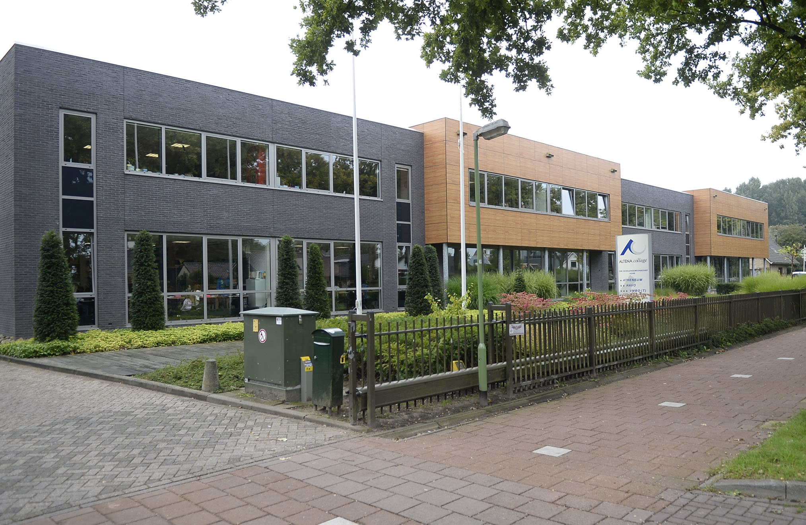

Ik zat voor deze school op twee verschillende middelbare scholen. De eerst twee jaar op het Uilenhof in Gorinchem en daarna op het Altena College in Sleeuwijk. Ik was wel goed in bijna elke vak behalve Nederlands, omdat ik moeite heb met het onhouden van betekenissen(woordenschat).
Dit is het Altena College, dus waar ik op school heb gezeten de laatste twee middelbare schooljaren. Ik heb het op die school erg naar mijn zin gehad. Er waren veel jongeren die ik mocht en ook die ik al kende sinds de basisschool.